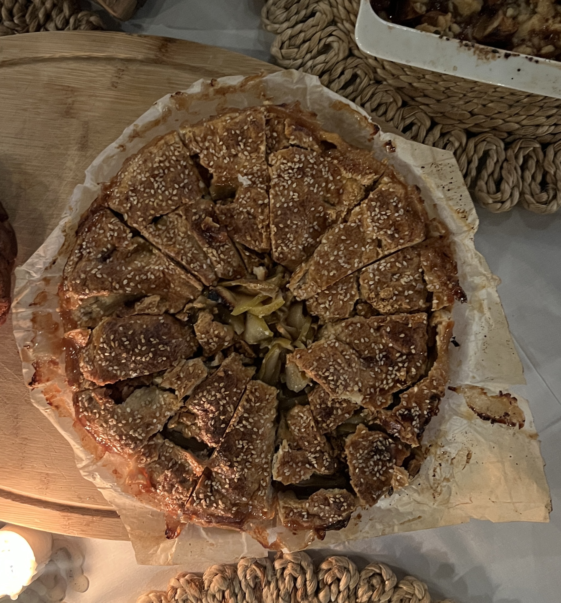

Apple Pie Goddess

This recipe has a delicious blance between sweet and savory
Ingredients
For The Crust:
- 450 grams all purpose flour
- 2 tablespoons granulated sugar
- 1 1/2 teaspoon kosher salt
- 340 grams unsalted butter (3 sticks), chilled
- 1 tablespoon apple cider vinegar
- 1/3 cup ice water
For The Filling:
- 2 1/2pounds - 8 cups firm, tart baking apples, cored and thinly sliced
- 3/4 cup - 180 mililiters mild-flavored honey
- 1/2 cup - 100 grams granulated sugar, plus 2 tablespoons for sprinkling
- 2 tablespoons all purpose flour, plus more for dusting
- 1 tablespoon apple cider vinegar or fresh lemon juice
- 1 teaspoon ground cinnamon
- 1 large egg
- 3 tablespoons raw white sesame seeds (optional)
- Flaky sea salt
- Vanilla ice cream, for serving (optional)
Directions:
- Make the crust: Combine flour, sugar and kosher salt in a large bowl, and use your hands to mix well.
- Add the butter to the bowl, and use your palms and fingertips to smash the pieces into the flour until you have got large, flat butter pieces that are evenly distributed among the flour. Pop the bowl into the freezer for 5 or so minutes.
- Combine vinegar and 1/3 cup water, and drizzle over the flour-butter mixture. Like you’re running your hands through sand, deliberately yet delicately mix the water into the flour/butter mixture. Resist the urge to add more water until you see that it’s absolutely necessary, and even then, use only an additional tablespoon or two.
- Turn the dough out onto a work surface, and use your palms to knead it lightly until the shaggy ball transforms into a slightly-less shaggy ball of dough. (It should still be relatively shaggy.) Pat the dough into a disc about 1 inch thick, rotating it to create a nice circle. Wrap in plastic or place in a resealable plastic bag and chill until firm, at least 2 hours.
- Heat the oven to 375 degrees. Remove dough from refrigerator, and let it soften slightly at room temperature, about 10 minutes or so.
- As dough rests, make the filling: Combine apples, honey, 1/2 cup sugar, the flour, the vinegar and the cinnamon in a large bowl. Toss the ingredients so every slice of apple is evenly coated.
- On a lightly floured work surface, roll the dough into a circle about 18 inches in diameter. Transfer dough to a lightly greased 9-inch springform pan, or a 9-inch deep-dish pie plate, letting it slump to meet the bottom of the pan and letting the overhang remain.
- Transfer the apple mixture and any juices that have accumulated to the crust. Drape the excess dough over the filling, covering the apples by about 1 1/2 to 2 inches. (Feel free to trim any dough that feels truly excessive.)
- Whisk the egg with a teaspoon of water and use it to brush the exposed crust. Sprinkle with sesame seeds, if using, the remaining 2 tablespoons of sugar and a little flaky salt.
- Place galette on a rimmed baking sheet (for easy cleanup should anything bubble over) and bake until the crust is deeply golden brown (about the color of a well-baked croissant), the apples are tender, and the juices are bubbling and thickened, 65 to 75 minutes.
- Remove galette from the oven and let cool completely (at least 2 hours) before slicing and eating, preferably with lots of ice cream.
Flaky Salt BEST Cookies //
Pecan's Heaven Brownies